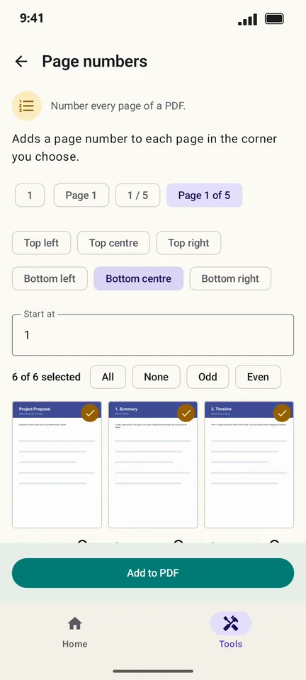

How to add page numbers to a PDF on Android
Long reports and merged documents are easier to discuss when every page has a number. PageCat numbers every page in the style and corner you choose.
Steps
Open the Tools tab, tap Page numbers and pick the PDF.
Pick a style (1, Page 1, 1 / 5 or Page 1 of 5) and a position such as Bottom centre.

Tap Add to PDF. Each page now carries its number.

Good to know
- Change Start at to begin counting from another number, for example after a cover page.
- Merge your files first, then number them, so the numbers run through the whole document.
Questions
Can I skip the cover page?
Select only the pages to number, and set Start at to the number the first one should get.